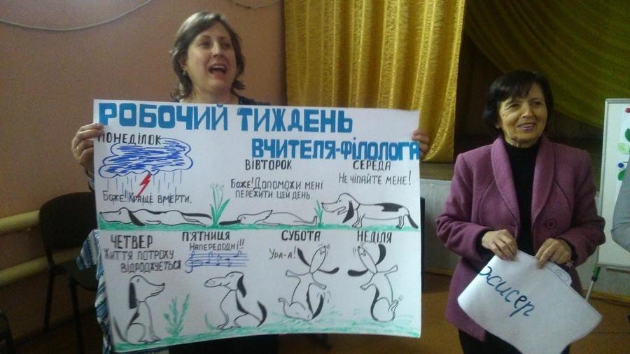
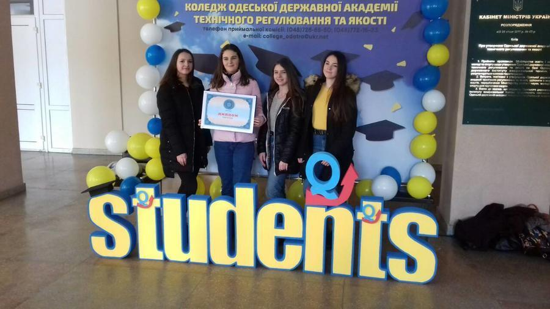

Про нашу школу
Одеська загальноосвітня школа № 130 І-ІІІ ступенів Одеської міської ради Одеської області розташована на території с. Ленінське, що входить до складу Малиновського району м. Одеси.
Зі слів старожилів стало відомо, що с. Ленінське почало свою забудову у 1879 році. Більшість забудовників були залізничники , і тому спочатку селище мало назву - Залізничне , пізніше за вимогою духовенства та віруючих жителів селище було перейменовано в Преображенське. У 1924 році селище названо Ленінським. Приміщення для школи в селищі не було. З 1919 року дітей почали навчати в приватному будинку Шеймана по вул. Північній , де був тільки один клас. Фашисти підірвали цей будинок у 1944році під час відступу з міста. В 1922 році по вул. Ползунова , була відкрита початкова малокомплектна школа, де навчалося 25 учнів. Навчання проводила одна вчителька - Ольга Брониславівна . Потім школа почала працювати в приватному будинку Шульц Ольги Альбертівни по вул. Нескучній, 14, де було два вчителя, які вели заняття вже в чотирьох класах. Перше приміщення для школи було побудовано по вул. Київська ( вул. Обнорського) на громадських засадах в 1928 році . Це була гарна одноповерхова будівля , в якій навчалося більше ста учнів 1-4 класів. До 1941 року це вже була семирічка , в якій навчалися біля 300 учнів. Під час Великої Вітчизняної війни фашисти зробили зі школи конюшню , а під час відступу - підірвали. Після звільнення міста школа була в двох будівлях - по вул. Ползунова в приміщенні машино- тракторної станції і по вул. Комінтерна в будинках з пічним опаленням . Так школа працювала до 1956 року , коли директором школи Машаланчуком Олександром Петровичем на уламках зруйнованого німцями приміщення силами учнів , батьків , учителів розпочалась відбудова школи . Нова школа мала два поверхи , кількість учнів зросла до 1000 , які навчалися в три зміни. Школа отримує статус середньої загальноосвітньої . В 1978 році розпочата прибудова нового трьохповерхового приміщення . 01 вересня 1979 року навчальний рік розпочато в новобудові з вугільним опаленням. У 1991 році котельна , яка опалювала школу та дитячий садок , була переведена з вугілля на газ.
Школа завжди тримається на директорові. Він створює команду , він створює стратегію, він створює політику.... Змінюють директора , змінюється все , і не один рік мине , поки школа оновиться з новою місією, політикою, стратегією. За роки існування школи № 130 директорами були Пастух Василь Іванович, Буравчик Максим Іванович , Волков Зіновій Петрович, Машаланчук Олександр Петрович, Лазаревич Микола Христофорович , Коршак Олексій Васильович, Хіменко Неоніла Петрівна , Шурко Ніні Яківна ("Спеціаліст вищої категорії", "Вчитель - методист" Відмінник освіти) , Бердяга Степан Іларіонович (" Спеціаліст вищої категорії " Відмінник освіти України) . З 2005 року посаду директора школи займає Слободянюк Людмила Леонтіївна ( "Спеціаліст вищої категорії", "Вчитель - методист"). Педагогічний колектив школи - це творчо працюючий колектив. Учителі в своїй роботі поєднують навчання з вихованням, використовуючи передові методи та різноманітні засоби отримання і засвоєння учнями знань, умінь , навичок. Наслідки роботи свідчать про серйозну , копітку роботу педагогічного колективу. Учні показують добру підготовку та міцні знання у районних , міських, обласних олімпіадах , є призерами та переможцями ІІІ, ІV ,V, VІ етапів Міжнародного дитячого конкурсу знавців української мови імені Петра Яцика. А життя триває , і оглядаючись на минуле , беручи з нього все найкраще, школа з упевненістю дивиться у майбутнє . В 2009 році Одеська загальноосвітня школа № 130 І-ІІІ ступенів Одеської міської ради Одеської області відзначатиме ювілей свого застування - 90 річчя з початку навчання дітей на цій території.
Школа сьогодні - це:
- понад 1200 учнів, неповторних і талановитих;
- понад 70 педагогів, творчих і відданих своїй справі;
- понад 40 вчителів вищої категорії, вчителів -методистів:
-12 з них мають звання "Відмінник освіти України".
Пріоритетні напрямки роботи: гуманізація процесу навчання і виховання, розвиток особистісно-орієнтованих мотивів навчання; створення умов для розвитку творчих здібностей учнів; впровадження сучасних технологій, технічних засобів і засобів міжнародної інформаційної бази; удосконалення форм і методів контролю.
 